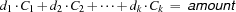

5.2 Example: Changing Money
Problem Specification
Given bills and coins of different denominations and an amount  , select a minimal number of bill and coins to pay . One instance of the problem assumes that we want to pay the amount of 1.42, and that we have 6 one dollar bills, 8 quarters (25 cents) , 10 dimes (10 cents), 1 nickel (5 cents), and 5 pennies (1 cent).
, select a minimal number of bill and coins to pay . One instance of the problem assumes that we want to pay the amount of 1.42, and that we have 6 one dollar bills, 8 quarters (25 cents) , 10 dimes (10 cents), 1 nickel (5 cents), and 5 pennies (1 cent).
Model
To avoid conversions, we assume that the amount to be paid and all denominations are specified in the same currency unit (e.g., cents). The data is specified by variables  specifying the available denominations
specifying the available denominations  and the number of available respective coins or bills.
and the number of available respective coins or bills.
The model has a variable for ever available denomination saying how many of the corresponding bills or coins we will use to pay the amount. For all i, we must have  Moreover, we must satisfy the constraint
Moreover, we must satisfy the constraint

Distribution Strategy
We distribute on the variables  , where we give precedence to larger denominations and, with second priority, to larger values.
, where we give precedence to larger denominations and, with second priority, to larger values.
fun {ChangeMoney BillsAndCoins Amount}
Available = {Record.map BillsAndCoins fun {$ A#_} A end}
Denomination = {Record.map BillsAndCoins fun {$ _#D} D end}
NbDenoms = {Width Denomination}
in
proc {$ Change}
{FD.tuple change NbDenoms 0#Amount Change}
{For 1 NbDenoms 1 proc {$ I} Change.I =<: Available.I end}
{FD.sumC Denomination Change '=:' Amount}
{FD.distribute generic(order:naive value:max) Change}
end
end
BillsAndCoins = bac(6#100 8#25 10#10 1#5 5#1)
Figure 5.3: A script for changing money together with a data specification.
Script
The procedure ChangeMoney in Figure 5.3 takes two parameters specifying the available bills and coins and the amount to be paid. It returns a script that enumerates the possible ways to pay the specified amount with the specified bills and coins. It is assumed that the bills and coins are specified in denomination decreasing order.
The statement
{Browse {SearchOne {ChangeMoney BillsAndCoins 142}}}
computes the list
[change(1 1 1 1 2)]saying that we can pay $1.42 with 1 one dollar bill, 1 quarter, 1 dime, 1 nickel, and 2 pennies. This payment uses the minimal number of bills and coins. The number of different possibilities to pay $1.42 with the specified stock of bills and coins is 6 and can be computed with the statement
{Browse {Length {SearchAll {ChangeMoney BillsAndCoins 142}}}}